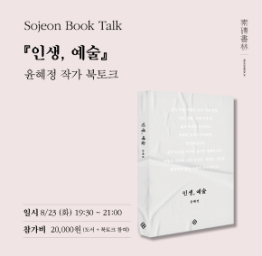

1945년(을유년) 12월 1일
광복의 감격과 의의를 기리며 ‘출판은 곧 건국 사업’이라는
사명감으로 첫발을 내디딘 을유문화사는
한국 현대사와 궤軌를 같이하며 한국 출판의 기틀을 다져 왔습니다.
한국 현대사와 궤軌를 같이하며
한국 출판의 기틀을 다져 왔습니다.
책
을유문화사에서
발간한 도서목록입니다.
-
 현대 예술의 거장 에릭 로메르
앙투안 드 베크,노엘 에르프 ,임세은
시네필의 서재에 없어서는 안 될 에릭 로메르를 다룬 첫 전기, ‘누벨바그’라는 격랑의 진정한 생존자 에릭 로메르의 아마추어 정신을
현대 예술의 거장 에릭 로메르
앙투안 드 베크,노엘 에르프 ,임세은
시네필의 서재에 없어서는 안 될 에릭 로메르를 다룬 첫 전기, ‘누벨바그’라는 격랑의 진정한 생존자 에릭 로메르의 아마추어 정신을
-
 을유사상고전 고문진보 후집
황견 ,이장우,우재호,박세욱
도연명, 이백, 백거이, 왕희지, 소식 등 대가들의 명문장이 한자리에 ‘옛글 가운데서 참된 보물’만을 모은 고전 중의 고전 우리나라에서
을유사상고전 고문진보 후집
황견 ,이장우,우재호,박세욱
도연명, 이백, 백거이, 왕희지, 소식 등 대가들의 명문장이 한자리에 ‘옛글 가운데서 참된 보물’만을 모은 고전 중의 고전 우리나라에서
- 의지와 표상으로서의 세계 아르투어 쇼펜하우어 ,홍성광 아르투어 쇼펜하우어가 가진 절대적 영향력의 근원 의지를 초월했을 때, 삶의 고통은 무無가 된다. 19세기 서양 철학의 정수, 이제는 완결판
-
 아다지에토
유대얼
악보에서 ‘천천히, 매우 느리게’를 뜻하는 아다지오(adagio)보다 조금 빠르게 연주하라는 의미. 또한 말러 교향곡 제5번 4악장의 대명사
아다지에토
유대얼
악보에서 ‘천천히, 매우 느리게’를 뜻하는 아다지오(adagio)보다 조금 빠르게 연주하라는 의미. 또한 말러 교향곡 제5번 4악장의 대명사
-
 그림 속 소녀의 웃음이 내 마음에
선동기
“누구나 가슴속에 명화 하나쯤은 간직하는 거 아닌가요?” 혹시 이 말을 듣고 떠오르는 그림이 누구나 흔히 알 만한 유명 화가의 작품이라
그림 속 소녀의 웃음이 내 마음에
선동기
“누구나 가슴속에 명화 하나쯤은 간직하는 거 아닌가요?” 혹시 이 말을 듣고 떠오르는 그림이 누구나 흔히 알 만한 유명 화가의 작품이라
- 헤세가 사랑한 순간들 헤르만 헤세 ,배수아 오래전 그땐 제대로 볼 수 없었던, 소설 뒤의 헤세를 만나다. 처음 만났을 때와는 다른 느낌의 때로는 삐딱하고, 때로는 인간미 넘치고,
을유인터뷰
『김헌의 그리스 로마 신화』 저자
서양고전학자 김헌
개인적으로도 그리스·로마 신화는 참 재미있습니다. 황당무계하고, 기발하고, 상상력이 풍부한 이야기들이 많아서 복잡하고 힘들 때 읽으면 그 시간을 재미있게 보낼 수 있습니다. 또 단순히 재미로만 그치는 것이 아니라, 이야기의 의미를 잘 새기다 보면 내가 부딪히는 개인적인 문제나 사회 문제에 대한 적절한 답을 찾는 경우가 있습니다.
자세히보기 chevron_right소식
- [을유문화사 X 국제갤러리] 메이플소프 사진전 인스타그램 이벤트 국제갤러리에서 2월 18일부터 3월 28일까지 메이플소프 사진전 Robert Mapplethorpe: More Life이 전시됩니다.을유문화사 현대
- 영화 이터너티 개봉 기념 이벤트! 개봉기념 이벤트로 을유문화사 페이스북 페이지에서 '영화티켓', '엽서3종세트' 증정 이벤트가 5월 9일까지 진행중이니 많은 관심 부탁
- 『헤어질 결심 각본』 전자책이 출간되었습니다. 『헤어질 결심 각본』 전자책이 출간되었습니다. 현재 교보문고, 예스24, 알라딘, 밀리의 서재, 리디북스에서 구매 가능합니다. 헤어질
- 2021년 세종도서 교양부문에 『공간이 만든 공간』이 선정되었습다 유현준 작가의 『공간이 만든 공간』이 2021년 세종도서 교양 부문에 선정되었습니다. 선정된 도서에 많은 관심 부탁드리며, 앞으로
- 『김헌의 그리스 로마 신화』 최인아책방 북토크 따뜻한 봄날, 『김헌의 그리스 로마 신화』 저자 강연이 최인아책방에서 열립니다. 신화를 사랑하는 독자 여러분의 많은 관심 부탁드립다
- 한겨레에 제프 다이어 『인간과 사진』, 『지속의 순간들』, 『그러나 "그러나 아름답다. 순간이지만 지속하기에 그렇다. 아름다운 순간은 멈추지 않는다. 찰나로 기록된 사진도, 잠시 귓전을 흘러 넘은 선율도
- 『공간의 미래』 10만 부 기념 교보문고 리커버:K 출간 “시대가 급변하고 위기의 시간이 오면 미래에 대해 이야기하는 온갖 선지자들이 등장한다. 그중 상당수는 후대에 거짓 선지자로 판명될
-  『인생, 예술』 윤혜정 작가 소전서림 북토크 『인생, 예술』 윤혜정 작가 북토크가 소전서림에서 진행됩니다. 『보그』 『바자』 에디터, 현 국제갤러리 디렉터 윤혜정 작가의 이야기를